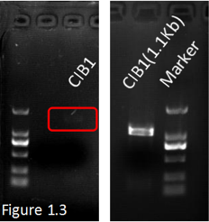

-
Extraction of the total RNA of Arabidopsis thaliana, then reverse transcription PCR to obtain the cDNA.Amplification of the CIB1 gene and CRY2 gene from the cDNA. Nest PCR to verify the length and to amplify the PCR product.
Time:14/4/2016~21/4/2016
- Borrowed a plant of Arabidopsis thaliana from Shenyang Normal University and got ready to start the experiment.
-
Extracted of the total RNA of Arabidopsis thaliana twice times. The RNA we extracted for the first time showed a little degraded. The second time, we changed the extraction kit and improved the grinding method and the gel testing was here. It was apparent that there existed 3 bands which might mean 28S、18S、5S RNA.
Used Plant RNA Kit to extract the total RNA.
Extracted the total RNA again in an improved method.There was nothing to do with the band of DNA marker. We just wanted to see how did the total RNA degrade and then we performed RT-PCR with the OligdT primer rather than random primers immediately to obtain the cDNA of mRNA.
- Amplified the CIB1 gene and CRY2 gene with designed primers from the cDNA we extracted before. Both of them showed pretty weak bands which could be hardly see. A nest PCR was performed to increase concentration and to enhance specificity.
- We extracted and purified the correct length of those two gene fragments as shown below:

A weak band in the left picture, and a clear band in the right after NEST PCR.
CRY2 gene was successfully extracted from cDNA. -
PCR amplification of the tCas9 gene from the commercial pHS-CR042 plasmid. Overlap PCR the tCas9 and CIB1 gene after gel purification respectively. Restriction digest of the overlap PCR product and the expression vector pBD024. Ligation of the digested products and then transformed the ligation product into DH5alpha bacteria cells. Patch and miniprep to obtain our expression plasmid that produces tCas9-CIBN fusion protein.
- Amplified of the tCas9 gene from the commercial pHS-CR042 plasmid and modified at 5’ end. Overlap pcr was applied to fuse CIBN with tCas9 after purification.
- Gel extracted of the fusion gene and then ligated with pSB024 vector.
- After gene sequencing, we found that the vector we constructed appeared the frameshift mutation. We consulted the literature again, adjusted the structure of the CIB1 gene, and cloned the partial sequence of the N terminal before the mutation, namely CIBN.
- Next, the same procedure was carried out: PCR with specific primers we booked, double enzyme digestion, phenol purification, ligation, transformation, colony PCR, path ,and restriction digest testing at last. the following is our digestion test results, sequencing results show completely consistent with the expected return sequence.
The top strip was the overlapping product tCas9-CIBN. The other bands were by-products.
Picked out SC(single colony)-3 and SC-4 containing tCas-CIB1 to culture overnight. Extracted the plasmid.
Double enzyme (Kpn I, Xba I ) digestion test showed the correct band of tCac9-CIB1(5Kb)
Modified the CIB1 gene. Amplified CIBN geng by specific primers.
SC-2, SC-6, SC-9, SC-11, SC-13, SC-15 were verified correct through colony PCR.
Enzyme (BamH I, XbaI) cut and the length of band were correct.
Abstract: Unexpected mutation might occur when you amplify a specific gene through PCR method. What’s more, the efficiency of restricted digestion and ligation would also effect the result of constructing a functional plasmid. We have improved our protocal according to the experiments we performed before: PCR annealing temperature was reset at 55 degrees Celsius up and down; After removal from the PCR instrument, the PCR product was rapidly cooled; Enzyme digestion for the night to ensure its efficiency; ligation and transformation were both performed on the ice with low temperature and so on. In conclusion, we have constructed an expression vector for fusion protein expression pBD024-tCas9-CIBN. The corresponding improvements were made about the the mutation occurred at experiments . -
PCR amplification of the synthetic VP64. Cloning the VP64 into SK plasmid which is used in our own laboratory. Sending the plasmid to sequence after digest testing. Overlap PCR of the CRY2 and VP64 gene after gel purification respectively. Restriction digest of the overlap products and a commercial plasmid pBD021 and then ligated. Transformed into DH5alpha and patched. Plasmid preparation of the plasmid after colony PCR testing.
-
Vp64, the transcriptional activator we purchased from the company turned out to be wrong to a certain extent. the DNA didn’t match the sequence of NCBI after BLAST. Therefore, we tried to synthesis of that gene entirely.
-
Amplified of the synthetic VP64 and cloned it into SK plasmid. Send this plasmid to sequencing and the feedback showed that the VP64 synthesized completely was correct, It meant that we could continue to use it in the later experiment. The following picture showed the correct result of double enzyme digestion test.
- Amplified of the CRY2 gene we extracted at the first step. Overlap PCR to connect the CRY2 and PV64 together after gel purification respectively.
-
Gel extracted of the fusion gene and then ligated with pSB024 vector. After sending the constructed plasmid to sequencing, time had passed for nearly a week.
-
A bad news made us mad after analyzing the feedback gave by sequencing company that there existed 3 intron fragments in CRY2 gene due to incompletely removal of genome DNA. We had no method but to clone the 4 extrons respectively and to fuse them together by the means of redesigning overlapping primers.
-
Fortunately, the progress of removing the introns went smoothly. You could see from the picture below that we purified the CRY2 without introns successfully and the sequence analyzing proved it correctly at the same time.
-
Next, the same procedure was carried out: PCR with specific primers we booked, double enzyme digestion, phenol purification, ligation, transformation, colony PCR, path ,and restriction digest testing at last. the following is our digestion test results, sequencing results showed that we had successfully constructed the pBD021-CRY2-VP64 expression vector.
-
Vp64, the transcriptional activator we purchased from the company turned out to be wrong to a certain extent. the DNA didn’t match the sequence of NCBI after BLAST. Therefore, we tried to synthesis of that gene entirely.
- Transformed the pBD024-tCas9-CIBN and pBD021-CRY2-VP64 expression plasmid into BL21 E.coli strain respectively. Cultured in LBK(LB culture with kanamycin antibiotics) overnight. Protein expression induced by arabinose. Protein extraction from the E.coli culture. western blot or Silver Staining after SDS-PAGE Gel electrophoresis to detect if the protein is expressed.
- Designed experiments to check if the fusion protein would be expressed in prokaryote cell such as E.coli. Transformed the pbD024-tCas9-CIBN and pBD021-CRY2-VP64 vectors into BL21 strain respectively.
- Colony PCR was done to select positive colonies after transformation. pBD024 plasmid consisted of inducible promoter (pBad/araC). Protein expression started within the existence of arabinose.
- Coomassie blue staining and silver staining was performed at first, but the effects were not satisfactory. The purpose band was not distinguished clearly from negative control group. Under that condition, we planed to do western blot to verify the existence of tCas9-CIBN protein’s HA tag.
- We explored the appropriate induce condition via pre-experiment. Data proved the protein was truly expressed. We found that 4mM arabinose, 30 Celsius culture temperature, and 16h culture time were the best choice to induce the expression of protein tCas9-CIBN.
- Protein CRY2-VP64 was also detected by western bolt rather than coomassie blue staining and silver staining. The best culture condition concluded above was applied into that experiment but did not use arabinose because of the constitutive promoter of pBD021. The results are illustrated as bellows:
- gRNA designed and booked the specific primers. Cloned the gRNA fragment into the expression plasmid containing CRY2-VP64. Transformed all of the pBD024-tCas9-CIBN, pBD021-CRY2-VP64-gRNA and pCold-GFP (containing the gRNA targeted reporter gene ) into BL21 E.coli strain. Test the function of the light-inducible system in prokaryote cell after selection.
-
Used the methods above to construct the eukaryotic expression vector. cloned the right gene into PESC and P426 eukaryotic expression vector respectively. Send the plasmid to sequencing.
- Cloned tCas9-CIBN, CRY2-VP64 into pESC vector, this plasmid consisted of eukaryotic promoter and we added yeast RBS at the N terminal of the gene. After send the constructed vector to sequencing, we designed the next step to transform it into yeast by some different ways.
- Overlap of the tCas9 and VP64 gene and cloned it to different empty expression plasmids, which acted as control.
-
We designed a control experiment to verify the validity of the LACE system. However, we met across some trouble of creating the tCas9-VP64 fusion gene.
- At first, we followed the regular progress to perform overlap PCR. A unexpected phenomenon came up that gel electrophorisis showed nothing, even a weak band, which never happened before. We guessed that it might have something to do with the length of that two genes,tCas9 is about 4Kb and VP64 240bp. So, we planed to change the experimental method to create that fusion gene.
- Changed the method of purification before overlap PCR. We purified the PCR products through gel extraction. But this time, we tried phenol purification instead. The result was not better in that way.
-
Changed the origin of the VP64 amplification. We used double enzymes to digest the SK-VP64 plasmid constructed before to see if the plasmid was degraded. Finally, unclear strips let us down and we had to turn eyes to other plasmid which contained VP64. We were so upset to accept the fact that we were failed again. Colony PCR demonstrated that there existed something wrong during the previous experiments.
-
Then we doubted the annealing temperature might influenced the result. The optimal annealing temperature for that reaction was proposed by gradient PCR(51 Celsius ~59 Celsius). We could conclude from the picture that every temperature between 51 Celsius to 59 Celsius was okay to overlap contrast to another gene’s obvious changes of gradient on the left. We were confronted with a series weak bands full of confusion. What we chose to do next was to continue base on the unsatisfactory result.
-
When we cloned the fusion gene into eukaryote vector pESC, we found there existed a correct strip via colony PCR. Then, we extracted the plasmid from the right colony. After enzyme digestion test and sequencing test, we finally attained the right control vector.
-
Amplified the prokaryote fragment of tCas9-VP64 from the eukaryote vector we constructed above.
-
Parts preparation. All parts for the submission are amplified using PCR that added the biobrick restriction sites. After the restriction digest, these fragments were cloned into the PSB1C3 vectors. Finally, the parts were verified using colony PCR and send to sequencing.
- At first, we extracted the pSB1C3 backbone from the kit. Then selected the red colonies which expressed RFP to culture and extracted the plasmid.
- Amplifed the fragments that would be submitted: tCas9, tCas9-CIBN, CIBN, CRY2, VP64, CRY2-VP64. All of these parts consisted of prokaryotic RBS.
- Molecular cloning of the part ..... Improved our plasmid....